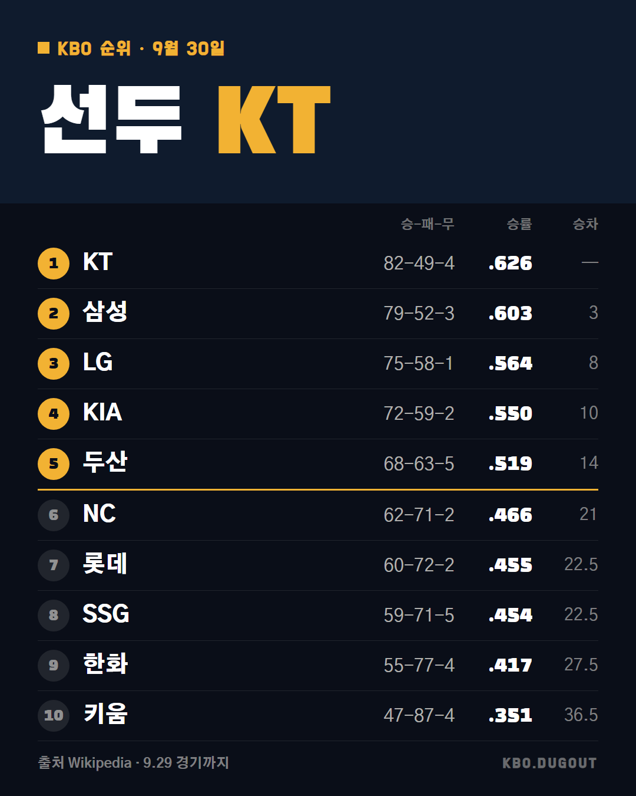

KT 연장 끝에 KIA 잡고 매직넘버 7, 삼성은 3연승으로 2위 굳히기... 도영이는 그 와중에 41호포로 타이거즈 한 시즌 최다 홈런 기록까지 새로 썼네 가을야구 지금 이 페이스면 어디까지 갈 것 같아?
QA 너무 김
KT 연장 끝에 KIA 잡고 매직넘버 7, 삼성은 3연승으로 2위 굳히기... 도영이는 그 와중에 41호포로 타이거즈 한 시즌 최다 홈런 기록까지 새로 썼네 가을야구 지금 이 페이스면 어디까지 갈 것 같아?
QA 너무 김
내일 선발투수 명단 벌써 나왔네.. 이 시즌 막판엔 로테이션 하나하나가 다 신경쓰인다
QA 출처와 사실이 다를 수 있음

9월 29일 경기까지 KBO 순위. 9.29 경기까지 KBO 순위 출처: Wikipedia (CC BY-SA)
QA 없음